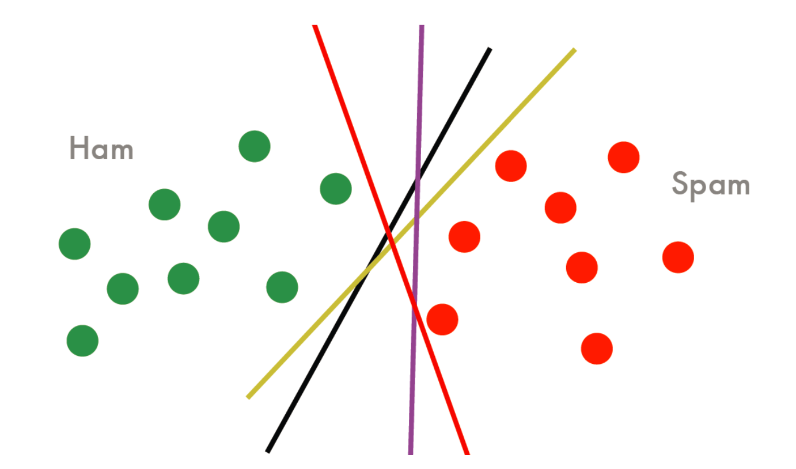
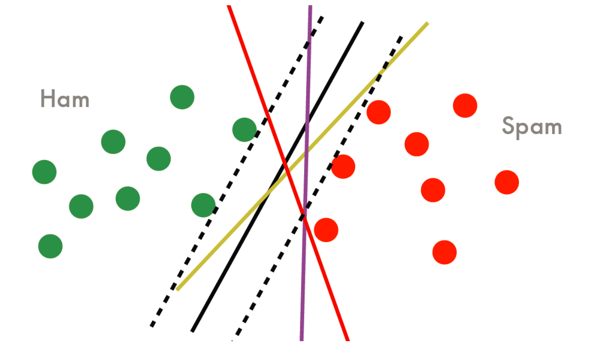
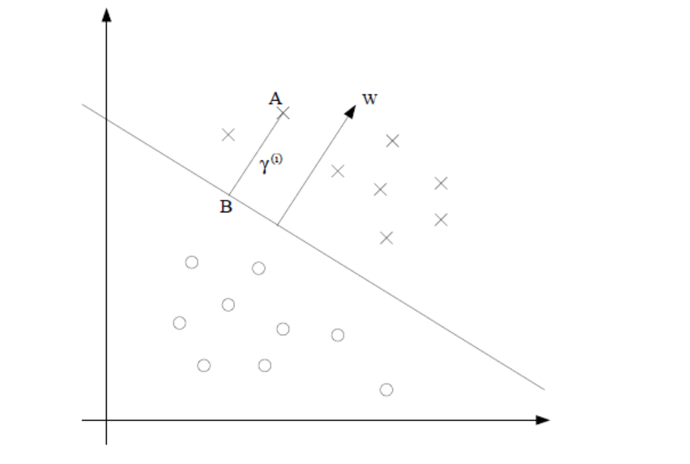
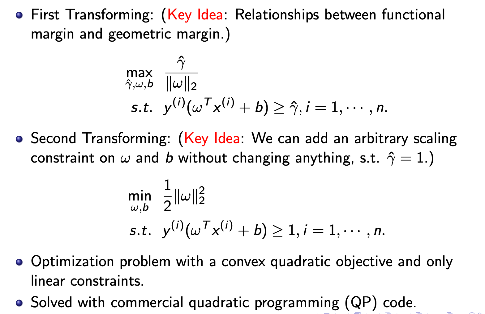

SVM 笔记 1: $\min_{w,b}\frac{1}{2}\left\Vert w \right\Vert^2_2$ 的推导
学习率应该怎样去选择？
- 鲁莽司机（Bold Driver）
- 每轮之后在一个 dataset 上进行评价
- $$\alpha_t=\frac{\alpha_0}{1+t/T}$$，学习率随着 t 不断下降
分类任务
-
Linear SVM：最简单的 SVM 的形式
-
Kernelized SVM：核化的一种 SVM 方法
回归任务
- SVR（Support Vector Regression）
SVM 这个方法用得并没有那么广泛，这个算法最大的一个好处就是它比较稳定。从 ML 上来看，它是一个很漂亮的方法，它背后有很好的思想。
泛化能力的分析（Generalization Analysis），有两本书，一本厚的、一本薄的，其中 SVM 就是其中一个核心的算法。现有的理论，后来才有的算法。
- Generalization Analysis: Vapnik, the nature of Statistical Learning Theory, Spinger, 1995.
- Generalization Analysis: Vapnik, Statistical Learning Theory, Wiley&Sons, 1998.
SMO：下一节课会讲
工具包：
- SVM Light
- LIBSVM
- Multi-Class SVM and StructSVM：多分类、结构化数据
什么是 SVM？它究竟在做些什么事情？
从最简单的情况出发，假设数据线性可分。

如下的直线都可以完美的将数据分开，分类面不唯一，所有分类面的训练误差都等于 0，那么该如何选择分类面呢。

应该选择泛化误差最小的那一个。那么怎么去考量泛化误差最小的呢？正确和错误之间有一个较大的容忍度，才能容忍更多的测试数据。
从肉眼来看，这条黑色的线是最好的，因为它之间的间隔充分的大，容忍区域宽。这是从几何的角度看的。

怎么样将这种思想用一种可计算的方式表达出来呢？从而有一个算法能够自动的找到那条黑色的线。这是 SVM 算法的一个出发点。
从以前的算法，看看能得到什么启示。
逻辑回归（Logistic Regression）
逻辑回归是一个概率模型，概率模型的好处是：每次算给定的 x 的标签的时候，事实上算的是一个概率，有了概率之后，就有了一个叫做置信度的概念。
有了概率就可以做极大似然估计。置信度告诉我们分类结果有多大的把握。
$$P(y = 1|x)=\frac{1}{1+e^{(-w^Tx)}}$$
概率模型都会有一个置信度。
置信度和前面的那条黑色的分割线有什么关系？可以理解为：黑色的线有较大的置信度。
在没有概率模型的情况下，该怎么定义置信度呢？这就是 SVM 最初要解决的东西：如何定义置信度。
SVM 通过一个叫做 Margin 的东西来定义置信度。SVM 方法也叫做 Max Margin。
注意，最大化Margin是一种思想，SVM 只是其中一个典型的代表。
Margin 刻画置信度这一概念。
Margin 在数学上的表达
- 假设在做一个二分类问题，特征是 x，标签是 y。
- 用一个线性的模型来做分类
- $$f_{w,b}(x) = g(w^Tx+b).$$
- 当 $$w^Tx+b>=0$$ ，则为类 1；否则为类 -1.
- 分类面：$$w^Tx+b = 0$$
接下来来定义Margin Margin，衡量一个点到一个分类面的一个远近程度。
- 函数Margin（Functional Margin）
对于每一个训练数据$$(x^{(i)},y^{(i)})$$，得到一个值，如下就是函数 Margin 的。
$$\check{\gamma}^{(i)} = y^{(i)}(w^Tx^{(i)}+b)$$
$$\check{\gamma}^{(i)}$$是一个大于 0 的值，它不是距离，但是和距离有一定关系。
- 因为如果标签 $$y^{(i)}=1$$，则需要 $$w^Tx+b$$ 是一个正的值
- 因为如果标签 $$y^{(i)}=-1$$，则需要 $$w^Tx+b$$ 是一个负的值
函数 Margin 只是想象中有一个量去尽可能的刻画置信度的作用，什么时候可以把它真正定义成一个距离呢？这就是几何 Margin 所定义的内容。
- 几何 Margin（Geometric Margin）

假设 A 点的坐标是 $$x^{(i)}$$，它与 $$\vec{OA}$$ 等价，一个样本可以理解为空间中的一点，不同维度对应它的不同特征。
则 B 点的坐标可以通过 A 点推导出来。
$$B 点的坐标 = x^{(i)}-\gamma^{(i)}w/\left\Vert w \right\Vert_{2}$$
这个式子的推导如下：
$$\frac{w}{\left\vert w \right\vert}$$ 为 $w$ 方向上的单位向量。
$$\gamma^{(i)}w/\left\vert w \right\vert$$ 得到的是 $\vec{BA}$
我们知道 $$\vec{OB} = \vec{OA} + \vec{AB}$$，$$\vec{OB}$$ 等价于 B 点的坐标。
因此 $$\vec{OB} = \vec{OA} - \vec{BA}$$
得到式子：$$\vec{OB} = x^{(i)}-\gamma^{(i)}w/\left\Vert w \right\Vert_2$$. 推导完成。
注：$$\left\Vert \right\Vert_2$$ 相当于 $$\left\vert \right\vert$$.
B 在判别超平面上，将 B 点的坐标代入得：
$$w^T(x^{(i)}-\gamma^{(i)}\frac{w}{\left\Vert w \right\Vert_2}) + b = 0$$
求得 $$\gamma^{(i)}$$
$$\gamma^{(i)} = \frac{w^Tx^{(i)}+b} {\left\Vert w\right\Vert_2}=(\frac{w}{\left\Vert w \right\Vert_2})^T x^{(i)}+\frac{b}{\left\Vert w \right\Vert_2}$$
观察这个式子可以看到就是在 $$wx+b$$ 上系数除以一个范数。
$$\gamma$$ 和 $$\check{\gamma}$$ 成一个比例的关系。
$$\gamma^{(i)}= \frac{\check{\gamma}^{(i)}}{\left\Vert w \right\Vert_2}$$
$$\gamma= \frac{\check{\gamma}}{\left\Vert w \right\Vert_2}$$
这样的话，就可以将训练数据的几何 Margin 给计算出来。
如果 $$\left\Vert w\right\Vert_2 = 1$$，则函数 Margin 和几何 Margin 是相同的。
几何 Margin 会用得更多，一方面，几何的概念反映了一个距离；另一方面，几何 Margin 有一种不变性，它除了范数，所以随便 w 怎么变，它不变。
函数 Margin 是一个相对距离，几何 Margin 是一个绝对距离。
置信度就是由几何 Margin 来决定的。
算法就可以表示出来了。
$$max\quad\gamma$$
$$s.t. \quad y^{(i)}\frac{w^T}{\left\Vert w \right\Vert_2} x^{(i)}+\frac{b}{\left\Vert w \right\Vert_2}>=\gamma,\quad i=1,…,n$$
这就是在最简单的情况下（线性可分）的一个 SVM 原始问题。
将 SVM 写成一个更容易求解的形式
有两个步骤。
- 利用几何 Margin 和函数 Margin 之间的关系得：
$$\max_{\check{\gamma}, w,b} \quad \frac{\check{\gamma}}{\left\Vert w \right\Vert_2}$$
$$s.t. y^{(i)}(w^Tx^{(i)}+b)\geqslant\check{\gamma}\quad i=1,…,n$$
- 取一个合适的 w，使得 $$\check{\gamma}=1$$， $$\left\Vert \right\Vert^2$$ 是为了更好的优化（平方），1/2 是为了计算的简便。得到简化的式子：
$$\min_{w,b}\frac{1}{2}\left\Vert w \right\Vert^2_2$$
$$s.t. y^{(i)}(w^Tx^{(i)}+b)\geqslant 1 \quad i=1,…,n$$
这就是平常看到的最熟悉的 SVM 算法。要优化的参数是 $w,b$，目标是 Margin 最大。条件是每一个训练数据都分对了，$$\geqslant 1$$ 的意思是支持向量内没有任何样本，也就是说这是一个 Hard Margin。
关于 SVM 的推导（Hard Margin/Soft Margin）我还会再写一篇通俗易懂的文章。
老师的 PPT：
